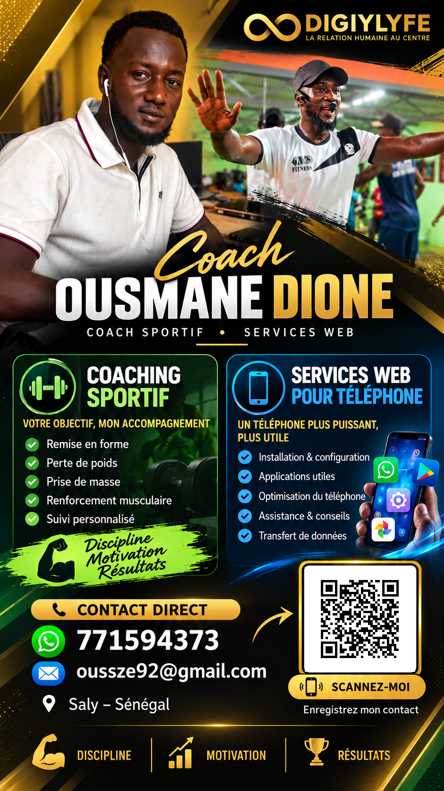

🌍 DIGIYLYFE · PROFESSIONNEL RÉEL · CONTACT DIRECT
Coach Ousmane Dione

Si l’image ne s’affiche pas, utilisez le lien « Voir l’affiche originale » ci-dessous.
🌍 DIGIYLYFE · PROFESSIONNEL RÉEL · CONTACT DIRECT

Si l’image ne s’affiche pas, utilisez le lien « Voir l’affiche originale » ci-dessous.